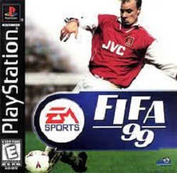

Muita gente acreditou que depois de World Cup 98 seria impossível produzir um Game de futebol melhor na época. Mas conseguiram, e para variar foi a Eletonic Arts Sport quem fez a façanha. Fifa 99 utilizava a mesma estrutura e tecnologia de World Cup, com algumas novas opções que tornaram o jogo ainda mais realista e divertido. A primeira mudança feita foi nos jogadores que ganharam um visual 3D mais realista, principalmente no rosto. Era possível até identificar alguns jogadores. Outra mudança feita foi a introdução de um novo esquema de iluminação nos estádios, tanto de dia como de noite, gerando sombras mais reais, parecidas com as dos jogos de futebol de verdade.
Que era novidade bastante interessante era nos controles. Em World Cup, sempre que você começava a correr tinha de esperar o fim do movimento para poder chutar. Agora podia sair correndo com a bola e chutar no instante em que desejar. Isso deixou o jogo bem mais rápido. O sistema de inteligência artificial sofreu algumas inovações, deixando o time adversário mais faltoso e malandro.
FIFA 99 passou a ter equipes e seleções do mundo inteiro disponíveis para jogar. Eram mais de 250 equipes de futebol diferentes, e 20 cenários que foram construidos a partir de estádios reais. Nos modos de campeonatos foi incluída a Super liga da europa, que contava com os melhores times de futebol da europa, entre eles Liverpool, Manchester, Inter, Barcelona entre outros. Podia montar seu proprio campeonato, caso não gostasse dos 12 que ja tinha. FIFA 99 para playstation suportava o joystick Dual-Shock, e até oito pessoas podiam participar de uma partida (usando um recurso multi-tap).